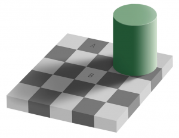
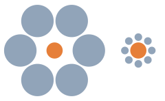
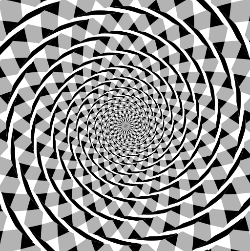
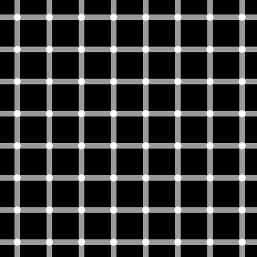
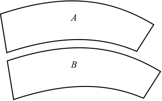
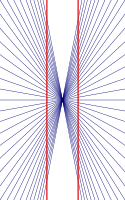
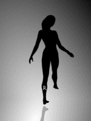
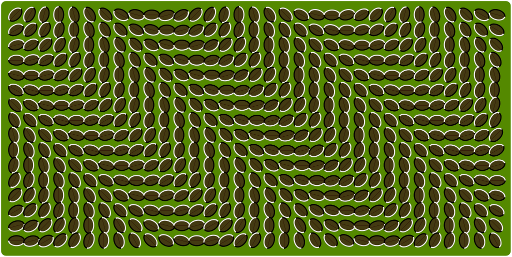
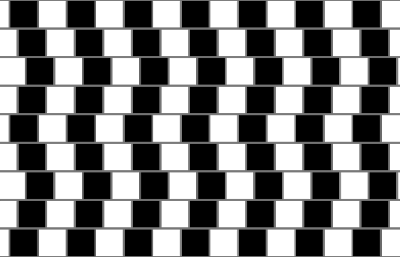

Some really great and short examples of illusions. If you want an explanation of them, I have added a link to the corresponding Wikipedia article.
Checker shadow illusion
{kind=link}

Checker shadow illusion: The pieces A and B are of the same color.
Ebbinghaus illusion
{kind=link}

Ebbinghaus illusion: the first central circle seems to be smaller than the second central circle although they are of identical size.
The Müller-Lyer illusion is simmilar.
Fraser spiral illusion
{kind=link}

Although you think you see a spiral, there are only concentric circles. This illusion is known as Fraser spiral illusion.
Grid illusion
{kind=link}

Dark dots seem to appear and disappear in the Grid illusion.
Jastow illusion
{kind=link}

In Jastow illusion, the two figures are identical, although the lower one appears to be larger.
Zöllner illusion
{kind=link}
In the figure of Zöllner illusion the black lines seem to be unparallel, but in reality they are parallel.
Hering illusion
{kind=link}

Hering illusion: Two straight and parallel lines look as if they were bowed outwards.
Spinning Dancer
This image is the only animated one in this post.
{kind=link}

Spinning Dancer: If the foot touching the ground is perceived to be the left foot, the dancer appears to be spinning clockwise (if seen from above); if it is taken to be the right foot, then she appears to be spinning counterclockwise.
Illusory motion
{kind=link}

Illusory motion: This image is not animated!
Café wall illusion
{kind=link}

Café wall illusion: the parallel straight dividing lines between staggered rows with alternating black and white "bricks" appear to be sloped